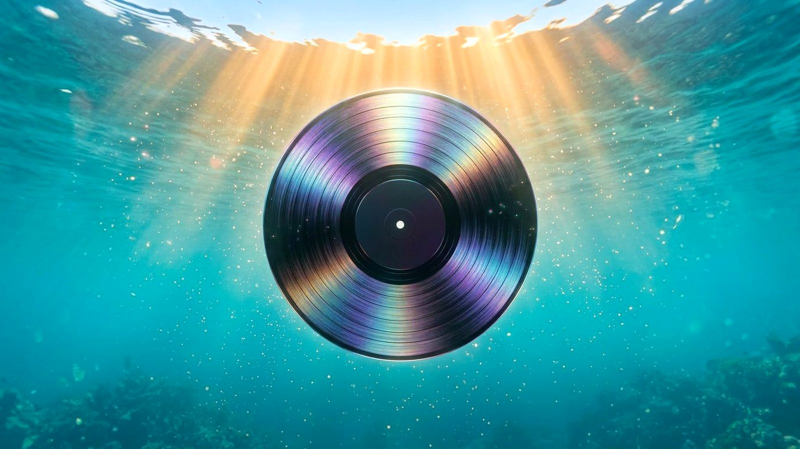
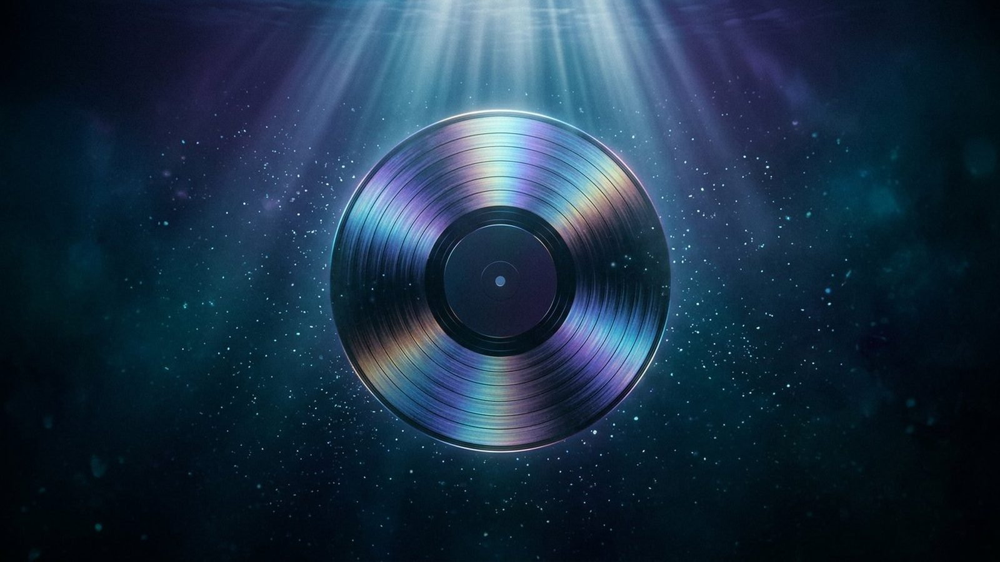

Reactive vinyl
A record that listens back
Feed Tidalia a mood and the disc starts turning. Its spectrum ring is driven by the live analyser — move your cursor and the mix breathes with you.
Tidalia · a generative music studio
Describe a feeling, a memory, an imaginary world. Tidalia turns it into an original soundtrack — synthesised live, never sampled.
A record spinning in the dark, four kilometres down. This is where the first note lives.
Tidalia keeps the texture — the hiss, the warmth, the weight of the needle.
Not all at once. Inevitably. Pads swell, sub-bass rolls, and a choir shows up from three rooms away.
Six realms. Infinite arrangements. One lagoon that is only yours.
01 — The studio
We don’t sample the sea. We synthesise it — note by note, tide by tide.
Every sound you hear on this page is generated in your browser from oscillators, filters and a little nerve. Describe the mood; Tidalia handles the arrangement, the tempo, the key, and the reverb tail that outlives the song.
Reactive vinyl
Feed Tidalia a mood and the disc starts turning. Its spectrum ring is driven by the live analyser — move your cursor and the mix breathes with you.
Real-time synthesis
Pads, sub, percussion and shimmer are scheduled from a seed, so your soundtrack is unique, instant, and tiny. No 40 MB loops, no buffering.
Remix forever
Same feeling, new arrangement. Save the ones you love into your archive, then send them to the composer for another tide.
02 — Describe a feeling
Start here, or go straight to the full studio. Either way, Tidalia reads your words, picks a realm, a key and a tempo, then composes.
You’ll land in the full composer with your words already loaded.
03 — From imagination to composition
This is a real interaction from the studio: a moonlit frame over a sunlit one. Move your cursor across the panel — the tide pulls the daylight through. Your prompt does the same thing to a track.


04 — The conductor
Eight arms, one pair of headphones, zero shame about the sub-bass. Build him from a mesh, and he’ll wear the glow ring that pulses with whatever you generate — turn the sound on and watch his eyes follow your cursor.
Model: procedural Three.js geometry — no .glb required. Prefer your own character? Drop a file in assets/models/ and the loader will pick it up.